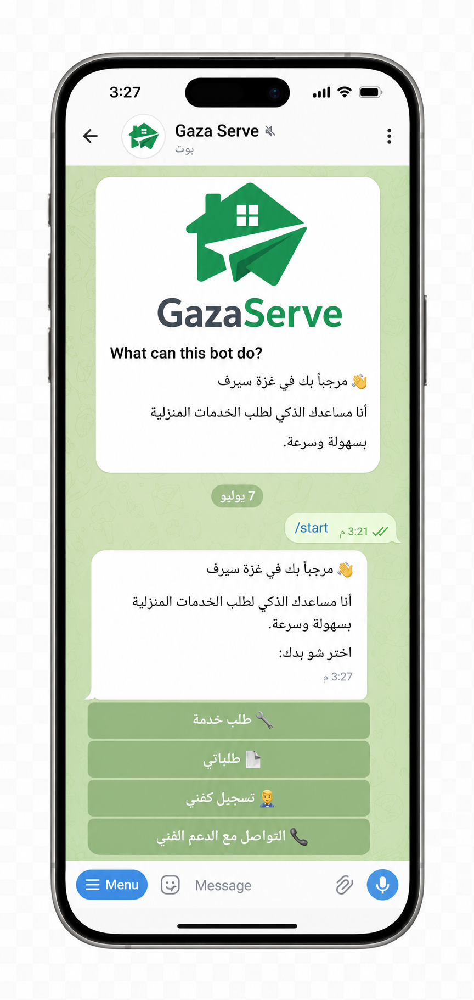

GazaServe ليس مجرد بوت، بل حل يربط بين من يحتاج الخدمة ومن يستطيع تقديمها
صُمم GazaServe ليكون وسيلة بسيطة وعملية تساعد أهل غزة على الوصول إلى الفنيين ومقدمي الخدمات المحلية من خلال تيليجرام، كما يساعد مقدمي الخدمة على الوصول إلى طلبات قريبة منهم بطريقة منظمة .

من حاجة حقيقية بدأت الفكرة
في ظل صعوبة الوصول إلى الخدمات المنزلية، وضعف الإنترنت، واعتماد الكثير من الناس على الاتصالات العشوائية أو المعارف الشخصية، جاءت فكرة GazaServe لتنظيم الوصول إلى الفنيين بطريقة سهلة وواضحة.
يعتمد المشروع على بوت تيليجرام لأنه خفيف، سريع، ولا يحتاج إلى تحميل تطبيق جديد أو استخدام منصة معقدة.
هدفنا الأساسي
أن نجعل طلب الخدمة المحلية أقرب وأسهل لكل شخص داخل غزة، وأن نوفر وسيلة منظمة تساعد المستخدم والفني في الوصول لبعضهما بسرعة وثقة.
لماذا يحتاج الناس إلى GazaServe؟
لأن الوصول إلى الفني المناسب في الوقت المناسب ليس دائمًا سهلًا.
ضعف الإنترنت
الكثير من المنصات تحتاج اتصالًا قويًا، بينما يعتمد GazaServe على رسائل خفيفة داخل تيليجرام.
صعوبة إيجاد فني
يساعد البوت على تنظيم عملية البحث بدل الاعتماد على السؤال العشوائي أو المجموعات.
غياب التنظيم
يوفر النظام خطوات واضحة للطلب: الخدمة، المنطقة، العنوان، والموعد.
نبني جسورًا بين الحاجة والحل
يوفر GazaServe طريقة بسيطة وذكية لربط المستخدمين بالفنيين المحليين، من خلال تجربة سهلة داخل تيليجرام، لتكون الخدمة أقرب في كل وقت.